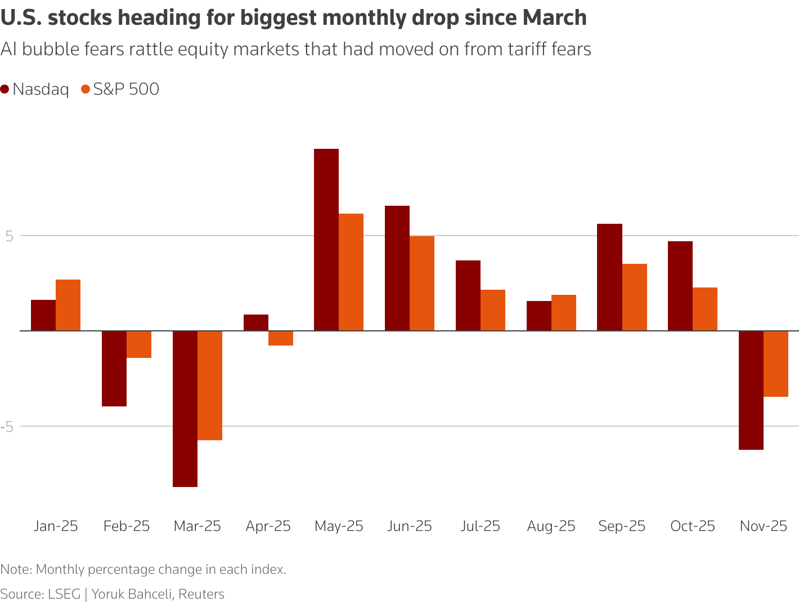

Will the Fed come to the rescue?
Markets remain on alert for intervention in the Yen by Japanese authorities, who tend to move in quiet periods with lower liquidity. The yen edged lower against the dollar on Monday, nearing last week's 10-month lows.
Today's key chart

Graphics are produced by Reuters.